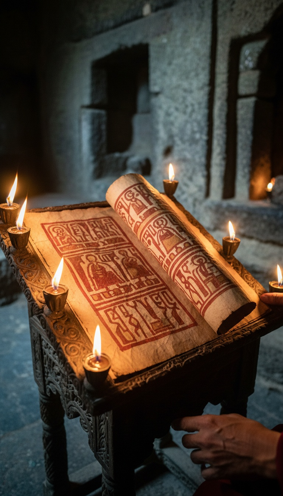

The Ethiopian Orthodox Tewahedo Church reads 81 books as scripture. The Protestant Bible sitting on your shelf contains 66. The gap is not a rounding error. It is fifteen books that Rome and Alexandria voted off the canon in the fourth century, and one African church that never agreed to the vote.
Ethiopia kept reading Enoch, Jubilees, and 1 Meqabyan out loud in stone churches while Europe forgot those texts existed. The receipts for that continuity are physical, dated, and still sitting in monasteries you can visit.

The Fourth-Century Vote Ethiopia Ignored
The canon most Western Christians inherit was hammered out at the Synod of Rome in 382, the Council of Hippo in 393, and the Council of Carthage in 397. Athanasius of Alexandria issued his famous Festal Letter in 367 listing 27 New Testament books and leaving Enoch off. That is the moment the door closed in the Mediterranean world.
Ethiopia was already Christian by then. King Ezana of Aksum converted around 330 AD under the missionary Frumentius, who was consecrated by Athanasius himself. The Ethiopian church predates the canon it was expected to accept.
Aksum answered to Alexandria on paper but ran its own scriptorium in practice. When Alexandria trimmed the list, Ethiopian scribes kept copying the older, wider corpus in Ge'ez. Enoch stayed in. Jubilees stayed in. 1, 2, and 3 Meqabyan stayed in. Nobody in Aksum sent a signed acceptance back to Carthage.
The Garima Gospels Are the Receipt
Two illuminated gospel books are kept at the Abba Garima Monastery near Adwa in the Tigray highlands of northern Ethiopia. Radiocarbon testing conducted by Oxford in 2010, published through the Ethiopian Heritage Fund, dated Garima 2 to between 390 and 570 AD and Garima 1 to between 530 and 660 AD.
That makes Garima 2 a contender for the oldest surviving illustrated Christian manuscript on Earth. Older than the Book of Kells by roughly 400 years. Older than most of what the Vatican Library holds in its Christian collection.
The monastery is not a museum. It sits on a mountain, is closed to women, and the manuscripts were kept in a wooden chest and handled by monks for sixteen centuries before conservators saw them. The chain of custody is unbroken and local.
Enoch Was Quoted in the New Testament and Then Erased
The Epistle of Jude, verses 14 and 15, quotes 1 Enoch directly by name. "Behold, the Lord cometh with ten thousands of his saints." That is Enoch 1:9. A canonical New Testament book quotes a book that most Christians no longer own.
Europe lost Enoch so completely that when James Bruce carried three Ge'ez copies out of Gondar in 1773, Western scholars had not seen the full text in over a thousand years.
Tertullian defended Enoch as scripture around 200 AD. Origen cited it. Then Augustine, writing City of God around 420 AD, argued it was too ancient to be trusted and the Latin West quietly dropped it. Ethiopia kept reading the same passages Jude quoted, uninterrupted, for the next 1,353 years.
What Jubilees and Meqabyan Actually Contain
Jubilees retells Genesis and Exodus with a solar calendar of 364 days, names for the wives of the patriarchs, and an angelic hierarchy that Genesis leaves out. Fragments in Hebrew were found at Qumran in Caves 1, 2, 3, 4, and 11, proving Jubilees was scripture-adjacent for Second Temple Jews before it was scripture-adjacent for anyone else.
1 Meqabyan is not the Maccabees you may have read in a Catholic Bible. It is an entirely separate Ethiopian text about a king named Meqabis of Moab, unrelated to the Hasmonean revolt. Western scholars did not translate it into English in full until the twentieth century.
The Broader Canon of the Ethiopian Orthodox Church also includes Sirach, the Shepherd of Hermas, and the Ethiopic Book of the Covenant. The numbers vary because Ethiopian tradition counts differently depending on whether you use the "narrower" or "broader" canon, but 81 is the figure the church itself publishes.
The Rock-Hewn Churches That Protected the Library
At Lalibela, eleven churches were carved downward into solid volcanic tuff during the reign of King Gebre Meskel Lalibela in the late twelfth and early thirteenth centuries. Bete Medhane Alem is the largest monolithic church in the world. Bete Giyorgis is cut in the shape of a cross, forty feet down into the ground.
These were not chapels. They were vaults. When Ahmad ibn Ibrahim al-Ghazi launched his jihad against Christian Ethiopia between 1529 and 1543, burning monasteries and libraries across the highlands, the rock churches and the manuscripts hidden inside them survived what wood and mud brick did not.
The Garima manuscripts survived that war. They survived the Italian occupation under Mussolini from 1936 to 1941. They survived the Derg regime. They are still on the mountain.
Cush, Aksum, and the African Root of the Story
The Hebrew Bible names Cush as the oldest son of Ham, grandson of Noah, and Josephus writes in Antiquities of the Jews 1.6 that the descendants of Cush "are even at this day, both by themselves and by all men in Asia, called Cushites." Classical writers used Aethiopia and Cush interchangeably for the kingdoms south of Egypt.
Moses married a Cushite woman in Numbers 12:1, and Miriam and Aaron were struck for objecting. The Queen of Sheba, whom Ethiopian tradition calls Makeda, is said in the Kebra Nagast to have borne Solomon a son named Menelik I, founder of the Solomonic dynasty that ruled Ethiopia until Haile Selassie was deposed in 1974.
The Kebra Nagast, compiled in Ge'ez in the fourteenth century, also claims Menelik brought the Ark of the Covenant to Aksum, where the Church of Our Lady Mary of Zion still claims to keep it under guard by a single monk who never leaves the compound.
The question is not why Ethiopia preserved fifteen books that everyone else discarded. Ethiopia had the older tradition, the older manuscripts, and no reason to trust a synod held two thousand miles away in a language its priests did not speak.
The question is what the councils at Rome, Hippo, and Carthage saw in Enoch and Jubilees that made cutting them worth the argument. Watchers descending from heaven. A 364-day calendar that does not match the liturgical year Rome imposed. Angelic names Rome did not authorize. A version of Genesis with more detail than the version we kept.
Ethiopia has been reading the uncut version in stone churches every week for sixteen centuries. What do the monks at Abba Garima know that your pastor does not?
Before you go
7 books the Vatican doesn't want you reading. Free PDF — the texts they cut, with sources. Joined by 140+ Inner Circle members.
No spam. Unsubscribe anytime.
Go deeper
The Hidden Canon, Vol. I — Enoch. Jubilees. Thomas. Mary. Judas. 90 pages, 14 chapters, every receipt cited. The books your Bible quietly removed.
Read the Canon →Books that informed this investigation
As an Amazon Associate, Hidden Epoch earns from qualifying purchases. Cost to you: nothing.
Research safely
The VPN we use to research without being tracked. First 3 months free.
Get NordVPN →